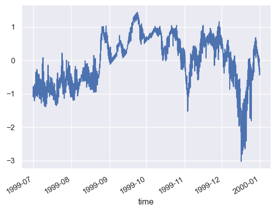

import intake
import ciofs_hindcast_report as chr
import pandas as pd
import calendar
import seaborn as sns
sns.set_theme()
slug = "moorings_noaa" # HIDE THIS CELL
cat = intake.open_catalog(chr.CAT_NAME(slug))
METADATA FROM CATALOG#
Map#
getattr(chr.src.plot_dataset_on_map, slug)(slug)

boulder-point#
# plot direct model-data comparison
# plot subtidal model-data comparison
geese-island-gps-tide-buoy#
noaa_nos_co_ops_9455500#
slug = "moorings_noaa_test" # HIDE THIS CELL
cat = intake.open_catalog(chr.CAT_NAME(slug))
source = "noaa_nos_co_ops_9455500"
df = cat[source].read()
df
---------------------------------------------------------------------------
NotImplementedError Traceback (most recent call last)
Cell In[2], line 4
2 cat = intake.open_catalog(chr.CAT_NAME(slug))
3 source = "noaa_nos_co_ops_9455500"
----> 4 df = cat[source].read()
5 df
File ~/projects/ciofs-hindcast-report/ciofs_hindcast_report/src/process.py:47, in DataFrameTransform.read(self)
45 def read(self):
46 # return self.read()
---> 47 return self.to_dask()
File ~/projects/ciofs-hindcast-report/ciofs_hindcast_report/src/process.py:33, in DataFrameTransform.to_dask(self)
31 if self._df is None:
32 self._pick()
---> 33 self._df = self._transform(self._source.to_dask().compute(),
34 **self._params["transform_kwargs"])
35 return self._df
File ~/miniconda3/envs/ciofs/lib/python3.10/site-packages/intake/source/base.py:361, in DataSourceBase.to_dask(self)
359 def to_dask(self):
360 """Return a dask container for this data source"""
--> 361 raise NotImplementedError
NotImplementedError:
cat[source]
noaa_nos_co_ops_9455500:
args:
targets:
- noaa_nos_co_ops_9455500_base
transform: ciofs_hindcast_report.src.process.calculate_anomaly
transform_kwargs:
varnames:
- sea_water_temperature
description: ERDDAP dataset_id noaa_nos_co_ops_9455500 from https://erddap.sensors.ioos.us/erddap
driver: ciofs_hindcast_report.src.process.DataFrameTransform
metadata:
catalog_dir: /Users/kthyng/projects/ciofs-hindcast-report/ciofs_hindcast_report/outputs/catalogs/
datasetID: noaa_nos_co_ops_9455500
featuretype: timeSeries
griddap: ''
info_url: https://erddap.sensors.ioos.us/erddap/info/noaa_nos_co_ops_9455500/index.csv
institution: NOAA Center for Operational Oceanographic Products and Services (CO-OPS)
maptype: point
maxLatitude: 59.440528
maxLongitude: -151.719944
maxTime: '2023-05-21T22:00:00Z'
minLatitude: 59.440528
minLongitude: -151.719944
minTime: '1975-07-12T10:00:00Z'
plots:
data:
height: 300
hover: true
kind: line
legend: top
shared_axes: false
subplots: true
title: null
width: 900
x: time
y:
- sea_surface_height_above_sea_level_geoid_mllw
- sea_water_temperature
summary: Timeseries data from 'Seldovia, AK (OVIA2)' (noaa_nos_co_ops_9455500)
tabledap: https://erddap.sensors.ioos.us/erddap/tabledap/noaa_nos_co_ops_9455500
target:
catalog_dir: /Users/kthyng/projects/ciofs-hindcast-report/ciofs_hindcast_report/outputs/catalogs/
title: Seldovia, AK (OVIA2)
urlpath: https://erddap.sensors.ioos.us/erddap/tabledap/noaa_nos_co_ops_9455500
slug = "moorings_noaa" # HIDE THIS CELL
cat = intake.open_catalog(chr.CAT_NAME(slug))
source = "noaa_nos_co_ops_9455500"
df = cat[source].read()
Processing code for overall dataset, to add monthly means and anomalies
def calculate_means(dd, monthly_mean, varname):
varname_mean = f"{varname}_mean"
varname_anomaly = f"{varname}_anomaly"
# function
dd = dd.set_index(dd.cf["T"].dt.month)
dd[varname_mean] = monthly_mean
dd = dd.set_index(dd.cf["T"].name)
# this shifts the mean for the first and last month so they are a bit off since they aren't interpolated
# using the month before and month after, but the middle months are good.
# generally this sets the mean to the 15th of the month rather than the beginning or end
inan = (dd.index.day != 15) * (dd.index > dd.index[0]) * (dd.index < dd.index[-1])
dd.loc[inan,varname_mean] = pd.NA
inan = dd.duplicated(subset=varname_mean)
dd.loc[inan,varname_mean] = pd.NA
dd[varname_mean] = dd[varname_mean].interpolate()
dd[varname_anomaly] = dd[varname] - dd[varname_mean]
return dd
from operator import methodcaller
methodcaller("chr.utils.calculate_distance", lons=1, lats=2)
operator.methodcaller('chr.utils.calculate_distance', lons=1, lats=2)
a = {"package": chr.src.utils,"method": "calculate_distance"}
getattr(a["package"], a["method"])
<function ciofs_hindcast_report.src.utils.calculate_distance(lons, lats)>
varname = "sea_water_temperature"
# varname_mean = f"{varname}_mean"
# varname_anomaly = f"{varname}_anomaly"
# calculate monthly mean
monthly_mean = df[varname].groupby(df.cf["T"].dt.month).mean()
df_new = calculate_means(df, monthly_mean, varname)
# dd = df.copy()
# # function
# dd = dd.set_index(dd.cf["T"].dt.month)
# dd[varname_mean] = monthly_mean
# dd = dd.set_index(dd.cf["T"].name)
# # this shifts the mean for the first and last month so they are a bit off since they aren't interpolated
# # using the month before and month after, but the middle months are good.
# # generally this sets the mean to the 15th of the month rather than the beginning or end
# inan = (dd.index.day != 15) * (dd.index > dd.index[0]) * (dd.index < dd.index[-1])
# dd.loc[inan,varname_mean] = pd.NA
# inan = dd.duplicated(subset=varname_mean)
# dd.loc[inan,varname_mean] = pd.NA
# dd[varname_mean] = dd[varname_mean].interpolate()
# dd[varname_anomaly] = dd[varname] - dd[varname_mean]
varname = "sea_water_temperature"
# varname_mean = f"{varname}_mean"
# varname_anomaly = f"{varname}_anomaly"
# calculate monthly mean
monthly_mean = df[varname].groupby(df.cf["T"].dt.month).mean()
df_new2 = eval("chr.src.utils.calculate_anomaly(df, monthly_mean, varname)")
df_new2
| longitude | latitude | z | sea_surface_height_above_sea_level_geoid_mllw | sea_water_temperature | sea_water_temperature_mean | sea_water_temperature_anomaly | |
|---|---|---|---|---|---|---|---|
| time | |||||||
| 1999-01-01 00:00:00+00:00 | -151.719944 | 59.440528 | 0.0 | 4.426 | 4.0 | 4.338106 | -0.338106 |
| 1999-01-01 01:00:00+00:00 | -151.719944 | 59.440528 | 0.0 | 2.807 | 3.9 | 4.337398 | -0.437398 |
| 1999-01-01 02:00:00+00:00 | -151.719944 | 59.440528 | 0.0 | 1.074 | 3.9 | 4.336691 | -0.436691 |
| 1999-01-01 03:00:00+00:00 | -151.719944 | 59.440528 | 0.0 | -0.335 | 3.9 | 4.335983 | -0.435983 |
| 1999-01-01 04:00:00+00:00 | -151.719944 | 59.440528 | 0.0 | -0.969 | 3.8 | 4.335276 | -0.535276 |
| ... | ... | ... | ... | ... | ... | ... | ... |
| 2023-05-14 03:48:00+00:00 | -151.719944 | 59.440528 | 0.0 | 2.601 | 5.6 | 5.140411 | 0.459589 |
| 2023-05-14 03:54:00+00:00 | -151.719944 | 59.440528 | 0.0 | 2.695 | 5.6 | 5.140411 | 0.459589 |
| 2023-05-14 04:00:00+00:00 | -151.719944 | 59.440528 | 0.0 | 2.794 | 5.6 | 5.140411 | 0.459589 |
| 2023-05-14 04:06:00+00:00 | -151.719944 | 59.440528 | 0.0 | 2.889 | 5.6 | 5.140411 | 0.459589 |
| 2023-05-14 04:12:00+00:00 | -151.719944 | 59.440528 | 0.0 | 2.992 | 5.6 | 5.140411 | 0.459589 |
451458 rows × 7 columns
Plotting code
# unclear why I have to shift this
monthly_mean_shifted = monthly_mean.copy()
monthly_mean_shifted.index = monthly_mean_shifted.index - 1
ax = sns.violinplot(data=df, x=df.index, y="sea_water_temperature", inner="quartile", color="orange")
monthly_mean_shifted.plot(ax=ax, marker="o", color="k", figsize=(10,5))
xticks = ax.get_xticklabels()
ax.set_xticks(ax.get_xticks(), labels=[calendar.month_abbr[int(i.get_text())] for i in xticks])
ax.set_xlabel("")
ax.set_title("Monthly means and statistical variation over time")
Text(0.5, 1.0, 'Monthly means and statistical variation over time')
6 months segments
slug = "moorings_noaa_test"
cat = intake.open_catalog(chr.CAT_NAME(slug))
source = "noaa_nos_co_ops_9455500_subset_min_1999_07_01_max_2000_01_01"
ddf = cat[source].read()
ddf
| time | longitude | latitude | z | sea_surface_height_above_sea_level_geoid_mllw | sea_water_temperature | |
|---|---|---|---|---|---|---|
| 0 | 1999-07-01 00:00:00+00:00 | -151.719944 | 59.440528 | 0.0 | 5.101 | 8.8 |
| 1 | 1999-07-01 01:00:00+00:00 | -151.719944 | 59.440528 | 0.0 | 5.291 | 8.8 |
| 2 | 1999-07-01 02:00:00+00:00 | -151.719944 | 59.440528 | 0.0 | 4.897 | 8.8 |
| 3 | 1999-07-01 03:00:00+00:00 | -151.719944 | 59.440528 | 0.0 | 3.979 | 9.0 |
| 4 | 1999-07-01 04:00:00+00:00 | -151.719944 | 59.440528 | 0.0 | 2.820 | 9.1 |
| ... | ... | ... | ... | ... | ... | ... |
| 4383 | 1999-12-31 20:00:00+00:00 | -151.719944 | 59.440528 | 0.0 | 4.497 | 4.1 |
| 4384 | 1999-12-31 21:00:00+00:00 | -151.719944 | 59.440528 | 0.0 | 3.868 | 3.9 |
| 4385 | 1999-12-31 22:00:00+00:00 | -151.719944 | 59.440528 | 0.0 | 3.063 | 4.0 |
| 4386 | 1999-12-31 23:00:00+00:00 | -151.719944 | 59.440528 | 0.0 | 2.164 | 4.0 |
| 4387 | 2000-01-01 00:00:00+00:00 | -151.719944 | 59.440528 | 0.0 | 1.404 | 4.1 |
4388 rows × 6 columns
Processing code for 6 month datasets, to add monthly means and anomalies
varname = "sea_water_temperature"
# varname_mean = f"{varname}_mean"
# varname_anomaly = f"{varname}_anomaly"
# get monthly mean from source with full dataset
ddf_new = calculate_means(ddf, monthly_mean, varname)
# dd = ddf.copy()
# # function
# dd = dd.set_index(dd.cf["T"].dt.month)
# dd[varname_mean] = monthly_mean
# dd = dd.set_index(dd.cf["T"].name)
# # this shifts the mean for the first and last month so they are a bit off since they aren't interpolated
# # using the month before and month after, but the middle months are good.
# # generally this sets the mean to the 15th of the month rather than the beginning or end
# inan = (dd.index.day != 15) * (dd.index > dd.index[0]) * (dd.index < dd.index[-1])
# dd.loc[inan,varname_mean] = pd.NA
# inan = dd.duplicated(subset=varname_mean)
# dd.loc[inan,varname_mean] = pd.NA
# dd[varname_mean] = dd[varname_mean].interpolate()
# dd[varname_anomaly] = dd[varname] - dd[varname_mean]
ddf_new["sea_water_temperature_anomaly"].plot()
<Axes: xlabel='time'>
varname = "sea_water_temperature"
varname_mean = f"{varname}_mean"
varname_anomaly = f"{varname}_anomaly"
ddf = ddf.set_index(ddf.cf["T"].dt.month)
ddf[varname_mean] = monthly_mean
ddf = ddf.set_index(ddf.cf["T"].name)
# this shifts the mean for the first and last month so they are a bit off since they aren't interpolated
# using the month before and month after, but the middle months are good.
# generally this sets the mean to the 15th of the month rather than the beginning or end
inan = (ddf.index.day != 15) * (ddf.index > ddf.index[0]) * (ddf.index < ddf.index[-1])
ddf.loc[inan,varname_mean] = pd.NA
inan = ddf.duplicated(subset=varname_mean)
ddf.loc[inan,varname_mean] = pd.NA
ddf[varname_mean] = ddf[varname_mean].interpolate()
ddf[varname_anomaly] = ddf[varname] - ddf[varname_mean]
ddf["annual_mean"].plot()
<Axes: xlabel='time'>
ax = ddf["sea_water_temperature_anomaly"].plot()
# ddf["sea_water_temperature"].plot(ax=ax)
# (ddf["sea_water_temperature"] - ddf["annual_mean"]).plot(ax=ax)
